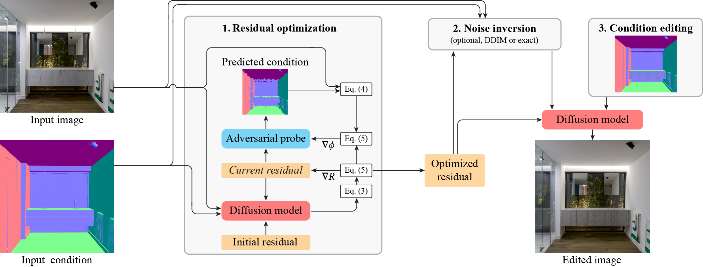

ResEdit: Residual embeddings for precise generative image editing
Abstract
Conditional diffusion image generators can be repurposed for editing through inversion, without the need for large-scale paired fine-tuning data. However, producing high-quality, targeted edits while maintaining image identity and global consistency remains challenging, as weakly conditioned inversion often embeds conflicting image features into the noise. We demonstrate that incorporating a residual image encoding as additional conditioning enables both improved identity preservation and better editability. We optimize this residual encoding to provide a strong conditioning signal for reconstruction, thereby reducing the reliance on inversion and susceptibility to its aforementioned pitfalls. To ensure this residual does not interfere with desired edits, we incorporate a gradient reversal-based optimization strategy that disentangles the residual from the edited condition. We illustrate our method's ability to produce high-fidelity results across precise intrinsic-based editing and relighting, and show proof-of-concept text-guided manipulation.
Method

Results
Material editing. We showcase diverse surface appearance edits on intrinsic channels, including normal (top), albedo (middle), and roughness (bottom). Our method (2nd col.) produces more plausible results that better align with the user edit than IntrinsicEdit (3rd col.). Text-based methods (right) struggle to produce precise edits due to the limitations of natural language. Best viewed zoomed-in.
Editing examples. We show edits for object removal, insertion, and translation (rows), respectively. The initial and edited intrinsic channels (e.g., edited albedo) are shown in the inset. Note that, compared to IntrinsicEdit, our method faithfully reconstructs unedited areas while resynthesizing plausible details in edited regions (e.g., shadows and reflections). Comparing to two text-based methods, Flux.1-Kontext and Nano Banana (rightmost columns), shows that text-based editing does not allow for precise editing (e.g., the rainbow pattern on the mug) and does not faithfully encode sufficiently detailed descriptions (apple example).
Intrinsic-consistency trade-off analysis. The two axes show edit error and identity error, with lower values preferred. Our full method lies on the favorable trade-off frontier, achieving the lowest edit error and identity preservation comparable to the strongest baseline.
Relighting. Given a lighting description—in the form of text prompt (first two examples) or reference illumination (rightmost example)—we encode it into the UniLight latent space. We then use the resulting lighting tokens as input conditions for our method, achieving plausible, realistic relighting. The vanilla UniLight approach struggles with identity drifts (e.g., the vase material in the bottom left) as it is based on a simple RGB→X→RGB pipeline which relies solely on intrinsic channels for identity preservation.